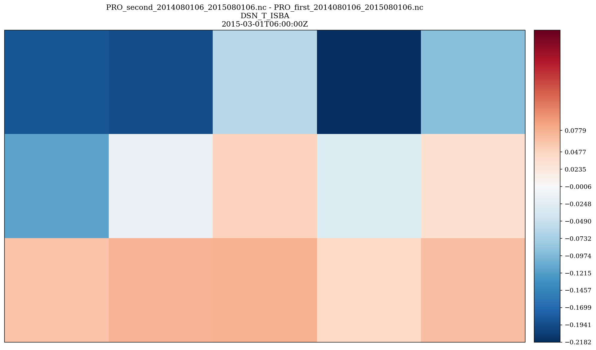
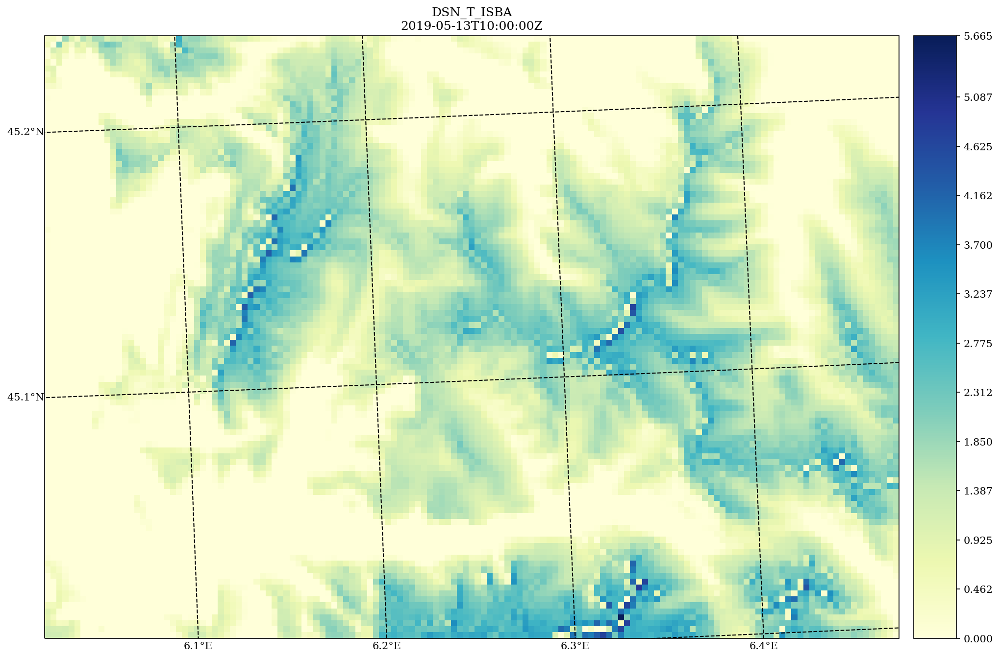
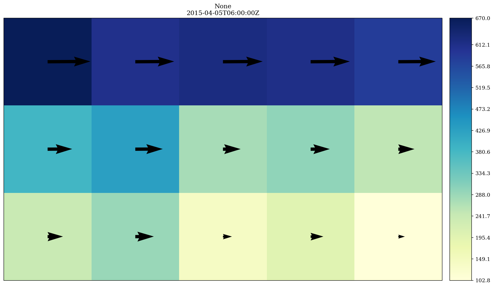
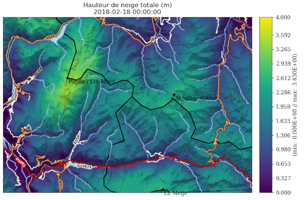

Map plotting tools for gridded data¶
The quicklookmap module for plotting maps of 2D data from simulation outputs¶
Created on 24 Mai 2025
- Authors:
radanovics
largely copied from epygram epy_cartoplot.py
- plots.maps.quicklookmap.difference_map(field, ref_field, title, plot_kwargs={})[source]¶
Plot a difference map between two fields.
- Parameters:
field (epygram H2D field) – first scalar field
ref_field (epygram H2D field) – reference field to substract.
title (str) – plot title
plot_kwargs – every other argument that can be passed to the cartoplot method of an epygram H2D field.
- Returns:
dict with plot elements: ‘fig’, ‘ax’, potentially ‘colorbar’ etc.
- Return type:
dict

- plots.maps.quicklookmap.read_and_preprocess(resource, fid, date, operation=None, global_shift_center=None, zoom=None, additional_selection_options={}, nanvalue=None, cap=None)[source]¶
Read field in resource, and preprocess if requested.
- Parameters:
resource (epygram.resource) – epygram resource to read data from
fid (epygram field idenifier depending on the resource type. for example str for NetCDF files or a dict for grib files) – field identifier
date (bronx.Date) – date (with time)
operation (dict) – makes the requested operation (e.g. {‘operation’:’-‘,’operand’:273.15} or {‘operation’:’exp’}) on the field before plot. default=None
global_shift_center – for global lon/lat grids, shift the center by the requested angle (in degrees). Enables a [0,360] grid to be shifted to a [-180,180] grid, for instance (with -180 argument).
zoom (dict) – a dict(lonmin, lonmax, latmin, latmax) on which to build the plot.
nanvalue (float or list of float) – If set, convert given value(s) to nan (e.g. use 0 to remove areas without snow on a total snow depth map)
cap (list of 2 elements of type float|None) – Cap the values of the field to (min, max). Values outside of range will be clip to min and max resp.
- Returns:
field
- Return type:
epygram.field
Usage example (for getting total snow depth field of a 2D PRO file
filenameon a given date):import epygram from snowtools.plots.maps import quicklookmap resource = epygram.formats.resource(filename, openmode='r') field = quicklookmap.read_and_preprocess(resource, 'DSN_T_ISBA', '2021-12-01')
- plots.maps.quicklookmap.scalar_map(field, title=None, plot_kwargs={})[source]¶
Plot a map.
- Parameters:
field (epygram H2DField or H2DVectorField) – field to plot
title (str) – plot title
plot_kwargs – every other argument that can be passed to the cartoplot method of an epygram H2D field. Details can be found at: https://umr-cnrm.github.io/EPyGrAM-doc/library/H2DField.html#epygram.fields.H2DField.H2DField.cartoplot
- Returns:
dict with plot elements: ‘fig’, ‘ax’, potentially ‘colorbar’ etc.
- Return type:
dict
import maptplotlib.pyplot as plt from snowtools.plots.maps import quicklookmap quicklookmap.scalar_map(field) plt.show()

- plots.maps.quicklookmap.wind_map(field, title, map_factor_correction=False, vectors_subsampling=50, wind_components_are_projected_on=None, vector_plot_method='quiver', quiverkey=None, plot_kwargs={})[source]¶
Plot a map of a vector field.
- Parameters:
field (epygram vector field) – vector field to plot
title (str) – plot title
map_factor_correction (bool) – if True, applies a correction of magnitude to vector due to map factor.
vectors_subsampling (int) – subsampling ratio of vectors plots. for example: 1 for a vector at every gridpoint, 10 for a vector every 10 grid points.
wind_components_are_projected_on – inform the plot on which axes the vector components are projected on (‘grid’ or ‘lonlat’). If None (default), look for information in the field, or raise error.
vector_plot_method – among (‘quiver’, ‘barbs’, ‘streamplot’) for vector plots. default is ‘quiver’.
quiverkey – options to be passed to plotfield to activate a quiver key (cf. pyplot.quiverkey).
plot_kwargs – every other argument that can be passed to the cartoplot method of an epygram H2D field. Details can be found at: https://umr-cnrm.github.io/EPyGrAM-doc/library/H2DField.html#epygram.fields.H2DField.H2DField.cartoplot
- Returns:
dict with plot elements: ‘fig’, ‘ax’, potentially ‘colorbar’.
- Return type:
dict

Helpers for pretty maps¶
A collection of functions to help pimping your cartopy maps !
Use case example, I wanto to plot a total snow depth of a simulation with
snowtools.plots.maps.quicklookmap and add a hillshade, some POIs, and a layer
representing the hydrography.
import datetime
import matplotlib.pyplot as plt
import cartopy.crs as ccrs
import epygram
from snowtools.plots.maps import quicklookmap, map_helpers
projection = ccrs.epsg(9794) # French Lambert projection
fig, ax = plt.subplots(1, 1, subplot_kw={'projection': projection}, figsize=(13, 6))
# Plot a scalar map of total snow depth
filename = '...'
date = datetime.datetime(2018, 2, 18)
resource = epygram.formats.resource(filename, openmode='r')
field = quicklookmap.read_and_preprocess(resource, 'DSN_T_ISBA', date)
quicklookmap.scalar_map(
field,
title=f"Hauteur de neige totale (m)",
plot_kwargs={
'fig': fig, 'ax': ax,
'minmax': [0, 4],
'colormap': 'viridis',
'parallels': 'auto',
'meridians': 'auto',
'epygram_departments': True,
'cartopy_features': []
})
# Add points of interset
POI = [
{'lat': 45.15449, 'lon': 6.143825, 'name': 'Pic de l'Étendard'},
{'lat': 45.004942, 'lon': 6.309428, 'name': 'La Meije'},
{'lat': 45.127064, 'lon': 6.336827, 'name': 'Aiguilles d'Arves'},
]
map_helpers.add_poi(ax, POIs=POI)
# Add a layer from IGN for rivers and hydrography
map_helpers.add_IGN_rivers(ax)
# Add an hillshade from IGN
map_helpers.add_IGN_hillshade(ax)
# Add road layer from IGN
map_helpers.add_IGN_feature(ax, layer='IGNF_TRANSPORTNETWORKS.ROADS')
plt.show()

- plots.maps.map_helpers.add_IGN_feature(ax, layer, zorder=10, **kwargs)[source]¶
Add a layer from the IGN map service on the cartopy map provided on axis ax.
For the list of layers available, see IGN documentation :
- Parameters:
ax – A maptpltlib Axis, with a projection defined
layer (str) – Layer of the IGN index (str descriptor. e.g. :
ELEVATION.ELEVATIONGRIDCOVERAGE.SHADOW)zorder (int) – Layer orderning (matplotlib index)
kwargs – Arguments passed to matplotlib
ax.imshow.
- plots.maps.map_helpers.add_IGN_hillshade(ax)[source]¶
Add an Hillshade for relief visualization (from IGN data).
- plots.maps.map_helpers.add_IGN_rivers(ax)[source]¶
Add a layer representing hydrography (from IGN data).
- plots.maps.map_helpers.add_poi(ax, POIs, crs_ref='EPSG:4326', **kwargs)[source]¶
Add point of interests on a map. POI is a list of points consisting of dictionnaries with key lat, lon (or x, y) and an optional ‘name’ to be plotted on the map.
- Parameters:
ax – A maptpltlib Axis, with a projection defined
POIs (list of dict) – The list of the Point of interests
crs_ref (str) – The CRS of the coordinates describing the POI (lat/lon or x, y). Defaults to lat/lon.
kwarks – Arguments to be passes to ax.scatter (nb: marker, color and s are set resp. to o, k and 15 but can be overwritten).